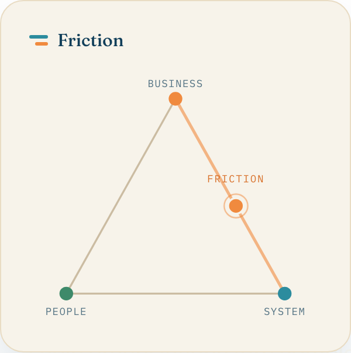
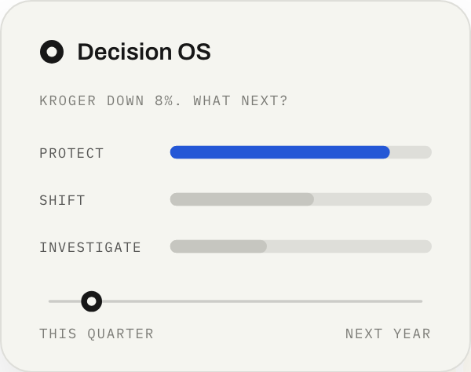
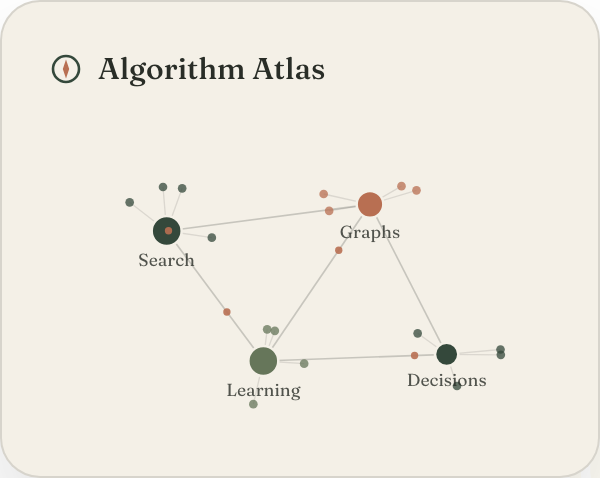
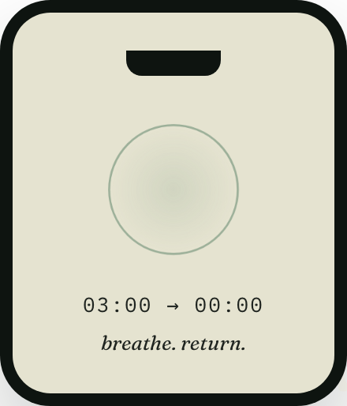
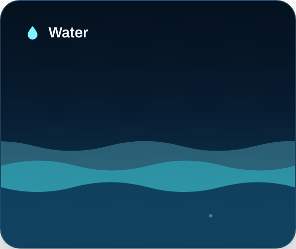
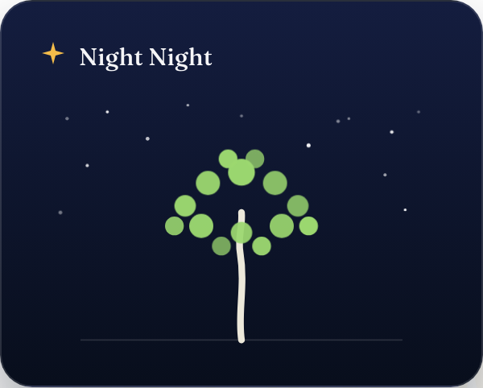

Find where the organization gets stuck.

Sharper commercial judgment, one decision at a time.

A field guide to the algorithms behind AI.

Three minutes. No pressure.

It’s always going somewhere.

A tree that grows, glows, and lets go.